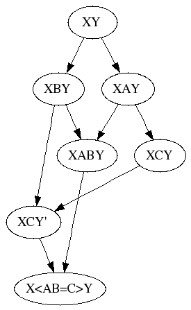

A Partial Extract of revctrl.org
In recent years the revctrl.org wiki has fallen victim to spam,
making it hard to find the valuable content that still resides there.
This is an attempt at extracting what remains of value.
Produced partly by hand, partly using the scrape/pull script, then
removed obvious spam links from the files in output-raw and
converted to Markdown.
The page contents were downloaded on the 12th July 2012.
- scraped, archived, and edited by Tony Garnock-Jones tonyg@leastfixedpoint.com
- spam cleanup and improvements to formatting by Michael Haggerty mhagger@alum.mit.edu
Authors
Unfortunately, all the edit history of the wiki was lost, and individual pages do not have clear authorship. All we have is a record of the wikipages named after some of the people who made contributions to the site.
Here, then, is a partial list of (presumed) authors. If anyone has more information about authorship of the content here, please contact me:
AaronBentley, AllenSmith, BramCohen, BryanOSullivan, DavidCary, EricKow, FrancisJackson, GlenWhitney, KenSchalk, ManpreetSingh, MiguelProvencio, NathanielSmith, PetrBaudis, RitaGolubeva, RossCohen, WJustin, and WillUther.
Table of Contents
The main entry point to the site:
Pages acting as Category indexes:
All available pages
Unfortunately, slightly fewer than half of the pages that used to be on the site could be rescued. (See here for those whose titles we know but whose contents were lost.)
- AccidentalCleanMerge
- AmbiguousCleanMerge
- BKMerge
- CategoryCategory
- CategoryMergeAlgorithm
- CategoryMergeExample
- CodevilleMerge
- ConceptTable
- Convergence
- ConvergentScalarMerge
- CrissCrossMerge
- DarcsMerge
- DieDieDieMerge
- EdgeVersioning
- FrontPage
- GenerationCounting
- Glossary
- ImplicitUndo
- LivingLinesFirst
- MarkMerge
- Merging
- NeutralInterface
- OperationalTransformation
- PreciseCodevilleMerge
- Renaming
- Resolution
- RevctrlTalks
- Rollback
- ScalarMerge
- SimpleWeaveMerge
- StaircaseMerge
- StarMerge
- ThreeWayMerge
- ThreeWayTextMergeImplementation
- UserModel
- Weave
- WikiNode
Attachments
In addition, a handful of attachments were rescued:
- ConvergentScalarMerge.py
- edgemerge.py
- edge-versioning.png
- nofrillsprecisemerge.py
- precisecodevillemerge.py
{kind=link}
Revctrl Wiki
For discussion, whiteboarding and archival of knowledge of revision control systems.
Places to go
-
#revctrlon irc.freenode.net
Resources
- The Revctrl Mailing List
- Zooko's quick reference
- the "Better SCM Initiative": another overview of systems
- RCS Planet - Blog Collection of RCS developers
- Revision Control Bibliography for more academically leaning publications on revision control
It would be nice to have a summary of the top N distributed version control systems, with some tips to help a programmer choose the best one for her situation. (Wikipedia lists over a dozen distributed control systems). Perhaps use http://lwn.net/Articles/151624/ as a starting point for a quick paraphrase and summary, then fill in other systems and details as we think of them? What to call that summary -- PickingYourVersionControlSystem?
Is it possible to make a NeutralInterface ?
Links
- a mailing list and a wiki for storing
$HOMEin VCS. - a mailing list about maintaining distro packages in VCS.
- SWiK: the Open Software wiki has a brief overview of SCM in general, Mercurial, Subversion (SVN), the TortoiseSVN Windows Shell Extension,JavaSVN, etc.
Glossary
accidental clean merge:: when two people make "the same" change, and these are then merged. Example:
a
/ \
b b
See AccidentalCleanMerge.
aliasing:: aliasing is taking two logically distinct entities and causing them to be treated as equivalent, at least in certain contexts. Aliasing is similar to suturing, but the assertion is weaker (x == y, not x is y), and is trivial to undo.
ambiguous clean merge:: See AmbiguousCleanMerge.
branch:: A named line of development. May be viewed either as a sequence of changesets or as a sequence of snapshots (but see the warning about the non-duality of these representations under snapshot). In the context of a repository, a branch may be viewed as a subgraph of the repository DAG with two distinguished vertices; the branch point where it diverges from other lines of development, and a tip. Often branches are tied to a repository in a many-to-one relationship. But other implementations are possible, for instance, Monotone supports fully distributed branches which do not exist exclusively on top of any particular repository, while other systems such as Darcs and Bzr tie branches to repositories in a one-to-one fashion.
changeset:: A collection of deltas to a set of files, considered as a unit and (in modern VCSes) with metadata including a change comment and a timestamp attached. To fully capture the history of a line of development, changesets must also record file additions (which may be modeled as a delta from an empty file), file deletions, and file renames. See also weave and snapshot.
checkin:: Synonym for commit used in older VCSes (SCCS, RCS, CVS). This is why "ci" sometime appears as an alias for the commit operation in the command-line interfaces of VCSes that emulate CVS/Subversions's UI.
checkout:: The operation of getting a workspace copy of some file(s) from a repository. Mainly used in first- and second-generation VCSes with locking. Recorded here because it's the reason "co" shows up in some command-line interfaces with a meaning different from commit.
commit:: Modern term for pushing changes from a workspace into a repository. Older VCSes tended to use checkin.
content merger:: See textual merger
convergence:: The idea that if the "same change" is made independently at different places in a graph, then a merge algorithm should treat the two changes as if they were a single change. Example:
a
/ \
b b
|
c
a convergent merge algorithm will make this a clean merge to c. See Convergence.
convergent scalar merge:: A scalar merge algorithm related to PreciseCodevilleMerge. See ConvergentScalarMerge.
Directed Acyclic Graph (DAG):: A diagram (graph) made up of points connected by arrows (directed), where no arrow can lead back to an earlier point; in other words, the arrows cannot form a loop (acyclic). Revisions in a VCS may be viewed as nodes in a DAG and the changesets connecting them as links expressing the "parent-of" relationship. Tip revisions will have valence 1, most ordinary revisions will have valence 2, and revisions representing a branch point or merge will have valence 3.
delta:: A description of changes between two versions of a file, usually as a sequence of line-oriented additions and deletions and replacements. Such line-oriented deltas are often represented in a standard notation derived from the output format of the Unix diff(1) command. There is a well-defined concept of deltas between binary files as well, but no standard notation for expressiong them.
first-generation:: See generations.
implicit undo:: See ImplicitUndo.
locking:: Early VCSes (SCCS, RCS) avoided the merging problem by awarding developers temporary but exclusive write locks on files. This approach did not scale well and was abandoned in second- and third-generation VCSes.
*mark-merge, -merge:: A family of scalar merge algorithms. See MarkMerge.
pcdv:: see precise codeville merge
precise codeville merge:: A textual merge algorithm. See PreciseCodevilleMerge.
rename:: the option where a file or directory is either moved to a new directory or has its name changed. It is sometimes useful to distinguish between moves (which put a file into a different directory) and renames (which change only the file's name, not its location). see Renaming
repository:: Physical storage of a full or partial history of changes or snapshots.
resolution:: The step where a system takes a user-edited file and heuristically determines what editing the user implicitly did. Not always 1 distinct step nor done at commit time. See Resolution.
revision:: A particular state (version) of files and directories which is stored in SCM.
rollback:: see Rollback
scalar merger:: A merge algorithm that works on a single atomic value. An example is mark-merge. Concept explained here.
second-generation:: See generations.
snapshot:: A collection of files and directories considered as a timestamped unit, possibly with metadata such as a revision comment attached. The revision history of a project may be considered either as a sequence of snapshots or as a sequence of the changesets connecting them. However, these representations are not perfectly dual. Notably, moving from a changeset-sequence representation to a snapshot-sequence representation loses information about file and directory add, delete, and rename operations. While additions and deletions can be reliably inferred by comparing snapshots, renames cannot be; this has some subtle and occasionally nasty ripple effects.
staircase merge:: A simple merge example:
a
/ \
b c
\ / \
c d
A merge algorithm which supports StaircaseMerge will cleanly merge this to d.
suturing:: suturing is taking two logically distinct entities and merging them into a single logical entity. See Suturing. Compare with aliasing.
textual merger:: a merge algorithm that operates on text files (as opposed to, for instance a tree merger or scalar merger)
third-generation:: See generations. Also, informally, 3G.
three way merge:: a merge algorithm which operates on three versions of a text file. See ThreeWayMerge.
tree merger:: a merge algorithm that operates on trees of files (generally handling things like file/directory add/remove/rename).
VCS:: Version-Control System. The most common of a handful of competing acronyms for the software this site is about. Others include SCM for Source Code Manager and (rarely) SCCS for Source Code Control System. The latter is also the proper name of the original VCS.
VCS generations:: There have, broadly speaking, been three generations of VCSes. The first was exemplified by SCCS and RCS -- centralized and locking, without support for development distributed across a network. The second generation was exemplified by CVS and Subversion, which introduced merging and added support for distributed development but retained the centralized model based on one master repository per project. Third-generation VCSes support a fully decentralized model; master repositories may exist as a matter of per-project policy, but the tools are all designed to support history merges between peer repositories.
weave:: A data structure representing a full ordering of lines for a particular file along with information about which lines exist for each historical revision. SCCS is the classic example. A number of merge algorithms are based on weaves. See Weave, WeaveMerge. One of the fundamental design desisions in a VCS is whether change history will be represented as a weave or a sequence of deltas.
workspace:: An editable copy of the state of a repository at a particular revision (or merge of several revisions) where a user can resolve conflicts and make new changes, then record them as a new revision. Also "working copy".
Concept Table
The revctrl Rosetta stone. Table of concepts available to revision control systems and (if available) the corresponding commands.
| concept | bzr | darcs | hg | svn |
|---|---|---|---|---|
| branch | branch | get | clone | copy |
| checkout | checkout | see branch | update | checkout |
| commit locally | commit --local | record | commit | na |
| commit to repo | commit | see push/send | see push | commit |
| create new repository | init | init | init | import |
| diff local | diff | whatsnew | diff | diff |
| diff repos or versions | diff | diff | incoming/outgoing/diff -r | diff |
| file copy | na | na | copy | copy |
| file move | mv | mv | move | move |
| log | log | changes | log | log |
| manifest | ls | query manifest | manifest | ls |
| pull | pull | pull | pull | update |
| push | push | push | push | na |
| revert | revert | revert | revert | revert |
| send by mail | merge-directive --mail-to | send | email (with patchbomb extension) | |
| summarise local changes | status | whatsnew -s | status | status |
| summarise remote changes | missing --theirs-only | pull --dry-run | incoming | update? |
| tag changes/revisions | tag | tag | tag | copy |
| update from repo | update | see pull | pull -u | update |
Concepts
- manifest - to see what files are under version control
- tag changes/revisions - to mark a certain revision, or set of changes as special in some way, like "PRERELEASE", or "2.0.3"
- what's the difference between pull and "update from repo"?
Notes
- na - this concept is not available in this revctrl system
- see... - this concept is not available, but the revctrl system uses a different concept in its place
See also
- Rosetta Stone from a Darcs perspective
Category: Merge Algorithm
Various and sundry merge algorithms.
List of pages in this category
- BKMerge
- CodevilleMerge
- ConvergentScalarMerge
- DarcsMerge
- DieDieDieMerge
- MarkMerge
- OperationalTransformation
- PreciseCodevilleMerge
- ScalarMerge
- SimpleWeaveMerge
- ThreeWayMerge
BK Merge
bk-merge is the merge algorithm used by the proprietary program BitKeeper. Obviously, we do not know how it actually works. Nor are we particularly interested in finding out; there's no particular reason to believe bitmover actually knows more than we do about merge algorithm design, and we don't want intellectual property issues tainting our work (either legally or in terms of public opinion).
We do, however, have a pretty good guess how it works, due to a combination of three things:
- Tridge's reverse-engineering and development of SourcePuller gave him some ideas how things fit together
- About that same time, BramCohen, NathanielSmith, RossCohen and others developed SimpleWeaveMerge from scratch, and then discovered that Tridge's notes on BK suddenly made a great deal of sense if interpreted in terms of their new theoretical framework.
- It was then realized that SimpleWeaveMerge is very similar to the ancient SCCSMerge, and that BK more or less just uses this well-known, decades old technology directly. This makes worries about patents somewhat less urgent...
Strengths
- Well-regarded, but we have no rigorous evaluation by people who know their merge algorithms.
- The general strengths of WeaveMerges.
Weaknesses
- Unknown, but may suffer from flaws with regards to ImplicitUndo (there is some kind of hunk rollback support, but we don't know any more than that) and the ordering problems that SimpleWeaveMerge has problems with.
Used by
Related
Codeville Merge
Traditional (or "Sloppy") Codeville merge is a TwoWayMerge which makes use of additional annotation information in order to resolve conflicts.
Codeville's annotation is on the "slots" or spaces between lines, not on the lines themselves. Each slot has associated with it a revision id. When a line is added, both surrounding slots are set to the current change. When a line is deleted, the slot where that line used to be is set to the current change. Note: deletions are the motivation behind annotating slots rather than the lines themselves.
In addition to the annotation, Codeville merge maintains a list of all changes which have been applied.
For merging, there are 2 sides (versions of the given file) which are to be merged. Call them the left and the right. First, the TwoWayMerge is run, resulting in an alternating set of matching and non-matching sections between the 2 sides. For each non-matching section it must be determined whether the left wins, the right wins or that there is a conflict.
Take lC as the set of changes in the annotation on the left side of a conflict section and rC as the set on the right. Take lA as the list of applied changes on the left and rA as the set on the right.
- If lC - rA is non-empty, then the left side should win.
- If rC - lA is non-empty, then the right side should win.
- If both sides should win, then it's a conflict.
- If neither side should win, it's also a conflict. This is almost certainly non-obvious at first blush, but this situation can occur, albiet somewhat infrequently. This is what's known as an AmbiguousCleanMerge.
Strengths
- handles arbitrary history topologies
- handles StaircaseMerge
- supports AccidentalCleanMerge
Weaknesses
- Resolution can be inconsistent
- susceptible to AmbiguousCleanMerge, which in turn can cause merge conflicts to repeat on every branch
Used by
Codeville
Related
Darcs Merge
For every patch P to be merged in the tree,
- Find a patch
T_nin the current tree whose context is identical to that ofP - Bring all the patches
T_(n+1)..T_(max n)that have been recorded after that patch into the context ofP(creating patchP') - If some patch
T_xcannot be brought toP's context, changePinto a conflict patch that cancelsPandT_x, and continue bringing the rest of the patches intoP's context - Apply patch
P'
It's that simple!
There is a thread on the darcs users mailing list comparing DarcsMerge and the exact patching form of ThreeWayTextMergeImplementation.
Strengths
- Is always able to apply patches that don't really conflict.
- Merging branches with many changes on both sides does not make it less probable that the merge will succeed
- Patches never apply "wrong".
- A tree with the same set of patches always has the same content.
- Allows orthogonal change types (e.g. identifier renames and hunks) to merge cleanly.
- Does not lose patch identity in merge
- Handles all merge "problems", such as CrissCrossMerge, AccidentalCleanMerge or StaircaseMerge. (These problems simply don't exist with this algorithm.)
Weaknesses
- You cannot use "traditional" diffs internally. They cannot accommodate conflict patches.
- Conflict becomes a repository state, not a working-tree state. (Some would consider this a pro)
- The "same" patch may have a different content in different trees, if it has different context (i.e. patches are ordered differently in those trees)
- Nobody has proved that the performance of conflict-conflict merge corner cases can be improved from
O(exp n) - Requires additional work if you want to record who merged what and when. (This is because the merge algorithm itself does not need this information.)
Used by
Darcs.
Related
Any merge algorithm that deals directly with patches.
Die Die Die Merge
Proposed name for a widely used, but rarely formalized, BooleanMergeAlgorithm.
The rule is: if a 0 is a descendent of a 1, then that 0 beats all 1s. otherwise, 1s beat 0s.
This algorithm never gives a conflict, and the user is not usually allowed to override its decision.
The main use is for modeling lifecycles of things like files. A file's dead/alive state can be modeled by a boolean scalar, and add/deletes can be merged by using a boolean scalar merge algorithm. This algorithm implements the simplest lifecycle -- a file is born once, lives for a time, but once dead it is permanently dead. More complex lifecycles including resurrection can be implemented by swapping in more sophisticated merge algorithms, but this increases the complexity of the rest of the system. Recording and tracking resurrections may be complex. Resurrected files raise issues for content merging -- because arbitrarily many branches might have made conflicting changes, that were never resolved when the branches were merged because the files were removed first, but these conflicts must all be resolved when resurrecting the file (though this necessity depends on the content merge algorithm in use) -- and so on. Therefore, several systems have decided to ignore or defer resurrection support for the time being, and use die-die-die-merge for lifecycles.
It may also be interesting theoretically, given the relation between BooleanMergeAlgorithms and general ScalarMergeAlgorithms.
Strengths
Very simple (simplest natural lifecycle model), gives very strong properties that ease design of other parts of the system.
Weaknesses
Only appropriate in very restricted cases.
Used by
Related
SimpleWeaveMerge uses this algorithm for the lifecycle of individual lines.
Operational Transformation
Operational Transformation is a theory very similar to the Darcs Theory of Patches (see DarcsMerge). It has been developed by the collaborative editing community.
In collaborative editing, much less emphasis is placed on conflict marking (they don't bother with it). Conflicts occur at a much more fine-grained level than in revision control (e.g. keypresses) and at the place that both users are currently working in real time. This means that each user should see the other making changes in the same area, and use a mechanism other than the editing system to coordinate. Conflict resolution just has to ensure consistency, and can otherwise do pretty much anything, as long as it is automatic.
A document starts empty. Each user then begins transforming it. Those transformations are concurrently sent to other users. However, with multiple machines, these messages might be received in different orders by different users. Ressel et. al. (in Proceedings of the ACM Conference on Computer Supported Cooperative Work 1996) proved some properties that must apply so that when all messages are eventually received and processed, all copies of the document are identical. From these two properties, you can show correctness (for their definition of correctness).
Definitions
An operation is a modification of a document. e.g. the addition of a character at a particular position in the document because of a keypress.
A transformation function is a function, T, that merges two parallel operations by serialising them. This is similar to the ||-merge operation in Darcs, or the exact ThreeWayTextMergeImplementation. T(op1, op2) returns an operation that is the 'same' as op1 but changed so that it can be applied after op2.
Composition is expressed as .: op1 . op2 means to apply op1, and then apply op2 to the result. We also define T(opx, opy . opz) = T(T(opx, opy), opz). This says that to transform opx through a pair of operations, opy.opz, you first transform opx through opy, and then you transform the result of that through opz.
example
A standard merge looks as below. We have one initial context, a, and two changes, op1 and op2 that both apply to a. Each of op1 and op2 can be passed through the transformation function T to get op1' = T(op1, op2) and op2' = T(op2, op1).
a
/ \
op1 / \ op2
/ \
b c
\ /
op2'\ / op1'
\ /
d
Requirements
TP1: For every two concurrent operations, op1 and op2, defined on the same state, the transformation function T must satisfy:
op1 . T(op2, op1) == op2 . T(op1, op2)
In the above example, this is requirement that op1 . op2' == op2 . op1'. d is consistent regardless of which way around the merge is performed. This is what the above example shows.
TP2: For every three concurrent operations, op1, op2 and op3, defined on the same state, the transformation function T must satisfy:
T(op3, op1 . T(op2, op1)) == T(op3, op2 . T(op1, op2))
or equivalently:
T(T(op3,op1),T(op2,op1)) == T(T(op3,op2),T(op1,op2))
example
Start with the previous example where there are two parallel operations, op1 and op2. Property TP1 says that which op you choose to transform to serialise them doesn't matter. This gives us the abcd diamond of states which again appears below. Property TP2 goes one step further and says that the way you serialise a third operation, op3, through the other two doesn't matter either. We could transform op3 through op1 and then op2', or we could transform op3 through op2 and then op1'. The result should be the same.
op1' = T(op1, op2)
op2' = T(op2, op1)
op3'a = T(op3, op1)
op3'b = T(op3, op2)
op3''a = T(op3'a, op2')
op3''b = T(op3'b, op1')
a--------
/ \ \
op1 / \ op2 \ op3
/ \ \
----b c---- e
/ \ / \
op3'a / op2' \ / op1' \ op3'b
/ \ / \
g d h
/ \
op3''a | | op3''b
\ /
f
Ressel's Transformation Functions
These are some proposed operators for collaborative editing, and a proposed transformation function. I mention them here because they are similar to exact three-way-merge, and yet can be shown NOT to satisfy the above properties.
In this formalism, priorities are fixed attributes of the user than makes the change. They are used to resolve conflicts (it allows both changes to be made in the order defined by the priorities).
There are two operations:
Ins(p, c, pr) inserts character c at position p with priority pr. Del(p, pr) deletes the character at location p with priority pr.
And the definition of the transformation function is relatively straight forward:
T(Ins(p1, c1, u1), Ins(p2, c2, u2)) :-
if (p1 < p2) or (p1 == p2 and u1 < u2) return Ins(p1, c1, u1)
else return Ins(p1 + 1, c1, u1)
T(Ins(p1, c1, u1), Del(p2, u2)) :-
if (p1 <= p2) return Ins(p1, c1, u1)
else return Ins(p1 - 1, c1, u1)
T(Del(p1, u1), Ins(p2, c2, u2)) :-
if (p1 < p2) return Del(p1, u1)
else return Del(p1 + 1, u1)
T(Del(p1, u1), Del(p2, u2)) :-
if (p1 < p2) return Del(p1, u1)
else if (p1 > p2) return Del(p1 - 1, u1)
else return Id()
The counter example of TP2 (from [http://hal.inria.fr/inria-00071213 Proving correctness of transformation functions in collaborative editing systems] by Oster et. al., but with typesetting errors corrected):
Site 1 Site 2 Site 3
"abc" "abc" "abc"
op1 = ins(3,x) op2 = del(2) op3 = ins(2,y)
"abxc" "ac" "aybc"
op3' = ins(2,y) op2' = del(3)
"ayc" "ayc"
op1' = ins(2,x) op1'' = ins(3,x)
"axyc" "ayxc"
Tombstone Transformation Functions
Having shown other systems incorrect, Oster et. al. then go on to describe the Tombstone Transformation Functions, or TTF. In version control parlance, this is a weave (see SimpleWeaveMerge). No characters are ever deleted, but rather they are marked invisible (these invisible characters are the 'tombstones'). Ordering ties are broken by user-ID. They show that this system satisfies TP2 when many other systems do not.
Strengths
Can provably merge correctly.
Weaknesses
Does not mark conflicts at all.
Used by
- A good summary paper is available from INRIA: http://hal.inria.fr/inria-00071213
- The [http://dev.libresource.org/home/doc/so6-user-manual so6 revision control system] (pronounced saucisse)
Related
Operational Transformation theory is related to Darcs theory of patches. Darcs is based on commuting patches:
op1.op2 <-> op2'.op1'
As described in [http://www.abridgegame.org/pipermail/darcs-users/2003/000221.html this thread], this effect can be achieved using the OT transformation operator as long as you can invert an operation. We'll define Inv(op) to be another operation that has the opposite effect of op. This means that Inv(op).op is the identity. Inv(op) is both a left and a right inverse, so op.Inv(op) is also the identity.
We can then define the commuted op1 and op2, those being op1' and op2', as:
op2' = T(op2, Inv(op1))
op1' = T(op1, op2')
Rather than inverting operators, it is also possible to view this as having an inverse Transformation function, T⁻¹. Imagine opA and opB are parallel ops that need to be merged; then we get opB' = T(opB, opA). And then opB = T⁻¹(opB', opA). The commutation of op1 and op2 then becomes:
op2' = T-1(op2, op1)
op1' = T(op1, op2')
This paper describes partial T⁻¹ functions for the tombstone transformation operators.
Scalar Merge
What is Scalar Merge?
There are a number of different types of merge algorithm. In order to introduce more theory into merge algorithms, these can be subdivided into a number of types. One type of merge algorithm is the scalar merge, so called because it assumes that each revision consists of only a single scalar.
Whereas traditional textual merge algorithms allow two different changes to a document to be merged, scalar merge simply decides which scalar wins cleanly, or that there is a conflict for the user to resolve.
A special case of scalar merge is the BooleanMergeAlgorithm. DieDieDieMerge is one example of such a boolean scalar merge algorithm.
Converting to full merge
There is a general theory of building complex merge algorithms using a scalar merger as a primitive. This description originated with Nathaniel Smith in a revctrl mailing list post:
You provide:
- the data structure you want to define a merger for. E.g., directory trees, or sets, or something. Note the invariants of this structure. (E.g., in a directory tree, you cannot have two distinct files with the same name.)
- a scheme to decompose any instance of this structure into a collection of scalar fields. (E.g., for directory trees, you could have one scalar associated with each file, this scalar being a (parent directory pointer, basename) pair; for sets, you could have a scalar associated with each possible item which takes on the values True or False for whether that value is in the set at hand.)
- a scheme to, given two structures A and B in a history graph, determine which scalar fields in the decomposition of A are "the same" as the which scalar fields in the decomposition of B. (We can call this step Self:Resolution.) (E.g., if you have arch/bzr-style directory trees, you associate a global unique id with each file/dir, and two fields match up if they go with the same entity id; or if you have monotone-style directory trees, you look at the add/rename/drop stanzas in the changeset between two trees and it tells you which files match up.)
Then to merge two structures:
- for each scalar field in the result object, use the Self:Resolution to find all the corresponding fields in all the structures in the history graph; this gives you a scalar DAG. Use your favorite scalar merge algorithm on this graph. This may give a conflict, call this a primitive conflict if it happens.
- after you have merged all the scalar fields, put your overall structure back together and check to see if any structural invariants from (1) are violated. If so, flag these as conflicts ("structural conflicts") too.
This works perfectly well to get excellent tree mergers and set mergers, and probably other things. I don't know how to use this approach to get a sequence merger (which is really the structure involved in text merging). The obvious approach is to model a sequence as some kind of linked list, with the link pointers the scalar fields, and I played around with this some and it actually works more or less (and is very closely related to edge versioning, actually). It might even work; I stopped playing with it because:
- I wasn't sure how to get a good handle on the structural conflicts -- in principle after scalar merging your "linked list" could have arbitrarily wacky structure, complete with loops and stuff, and it's not clear how to turn this into a nice file-with-conflict-marked-sections representation for the user. Maybe in practice you can limit how wacky the structure gets, though, I dunno.
- What I really want is a user model for text merging; this wasn't necessarily getting me any closer to that, so even if it all worked out, I wouldn't know whether I'd actually accomplished anything anyway.
- Merge algorithms are fun, but we were already far enough developing all this theory that it was time to stop and actually implement stuff and come back to all this later, when there weren't a million other more practical things to spend time on :-). (3-way text merging kind of sucks, but it's not like an urgent bug that users complain about every day.)
Weave merging can also be seen as a special case of this formalism, with the scalar fields being the boolean "does this line in the weave currently exist" values.
Scalar Merge Algorithms
CategoryCategory CategoryMergeAlgorithm
Convergent Scalar Merge
Convergent scalar merge is a ScalarMerge algorithm based on the property that if A and B are merged and A has an ancestor whose history is isomorphic to B's history, then A should win. It's similar to MarkMerge, and can be thought of as the scalar version of PreciseCodevilleMerge (in fact, they were developed in tandem).
attachment: ConvergentScalarMerge.py
Strengths
- supports Convergence
- handles StaircaseMerge
- has a conceptually simple motivation
Weaknesses
- doesn't support ImplicitUndo
Used by
- Will be used by Codeville
Related
Mark Merge
A scalar merge algorithm, related to CodevilleMerge. Generally referred to as "mark-merge" or "*-merge" (but never StarMerge, which is something else entirely).
Detailed writeup of original version: http://thread.gmane.org/gmane.comp.version-control.monotone.devel/4297 ("unique-*-merge")
Detailed writeup of updated version (handles accidental clean merges): http://article.gmane.org/gmane.comp.version-control.revctrl/93 ("multi-*-merge")
Other links: http://article.gmane.org/gmane.comp.version-control.revctrl/92, http://article.gmane.org/gmane.comp.version-control.revctrl/197 ("deterministic-*-merge")
The most interesting things about *-merge are:
- has a UserModel
- has a formal analysis showing that it is fully well-defined, and implements the UserModel
Strengths
- best formal analysis of any current merge algorithm
- believed to never clean merge without justification (conservative)
- "deterministic *-merge" (basically multi-*-merge but easier to make formal statements about) is commutative and associative (i.e., satisfies OperationalTransformation theory's properties TP1 and TP2).
Weaknesses
- unique-*-merge does not handle accidental clean merges; multi-*-merge does
- does not handle StaircaseMerge
- does not attempt Convergence
- does not attempt implicit rollback
Used by
Related
CategoryMergeAlgorithm CategoryScalarMerge
Precise Codeville Merge
PreciseCodevilleMerge is the combination of a weave-based merge with a resolution algorithm based on unique lines, plus Convergence, GenerationCounting, LivingLinesFirst, and EdgeVersioning. If you wish to answer the existential question of whether a particular piece of merge code is a version of PreciseCodevilleMerge, go over that checklist of features and if they're all there then it qualifies.
ImplicitUndo isn't included because it conflicts with other features and has internal inconsistencies. Dynamic line ordering isn't included because of technical difficulties, although it's hoped that eventually somebody will figure out how to implement a weave which does partial ordering.
ConvergentScalarMerge can be thought of as the scalar (and thus much simpler) cousin of PreciseCodevilleMerge.
attachment: precisecodevillemerge.py
Those wishing to understand how the code works can start by reading through the no frills code, which doesn't support resolving to living lines first and EdgeVersioning, and thus is simpler to understand, and still gives the same answer as the full version most of the time.
attachment: nofrillsprecisemerge.py
An even less featureful merge algorithm than no frills is SimpleWeaveMerge, which, oddly, is more complicated to implement than no frills.
Strengths
- supports Convergence
- supports StaircaseMerge
- supports EdgeVersioning
Weaknesses
- doesn't support ImplicitUndo
Used by
Related
This uses the Patience sorting algorithm to find the longest common subset.
Simple Weave Merge
This algorithm has sometimes been known as PreciseCodevilleMerge; however, as the Codeville developers wish to reserve the pcdv name for whatever algorithm they eventually decide to implement, a new name was chosen. It is the first complete algorithm to temporarily bear the name PreciseCodevilleMerge, and the eventual PreciseCodevilleMerge will most likely be a variation on it, with the addition of such features as Convergence, ImplicitUndo, and fixes for certain CrissCrossMerge ordering ambiguities.
See also http://bazaar.canonical.com/BzrWeaveFormat for a nice and detailed description.
Strengths
Weaknesses
Used by
Related
SCCSMerge, BKMerge, PreciseCodevilleMerge
Three-Way Merge
Summary
Three-way merge is a staple of revision control systems such as CVS and Bazaar. It takes three inputs: THIS, BASE, and OTHER. THIS is the current value in the user's tree. OTHER is the current value in the tree to be merged. BASE is a basis for comparison between THIS and OTHER, and is usually an ancestor of them.
The operation of three way merge can be paraphrased as "keep my changes, but apply the changes OTHER made to my copy".
Consider the values in each version in a scalar merge context.
| Case | THIS | BASE | OTHER | RESULT |
|---|---|---|---|---|
| 1. | A | A | A | A (Boring case) |
| 2. | B | A | A | B (Take change from THIS) |
| 3. | A | A | B | B (Take change from OTHER) |
| 4. | A | B | A | A (AccidentalCleanMerge) |
| 5. | A | B | C | Conflict |
As long as any two versions have the same value, the algorithm produces a result. A conflict happens when all versions are have different values, because it is not clear whether OTHER or THIS (or some combination) should be taken. It is not universally accepted that case 4 should merge cleanly, so this case is sometimes an exception.
Conceptually, in a textual merge context Resolution is performed between BASE and the other 2 versions in turn (at merge time, ignoring changes in between). Discrete sections of the versions can then be compared according the above chart.
Gnu diff3 is a common implementation of three-way text merging.
The selection of an appropriate base is important in three-way merges, because three-way works best when the base is similar to THIS and OTHER. The less similar it is, the more chance that it will have a different value from either THIS or BASE, causing unnecessary conflicts. In addition, less similarity can result in Resolution errors, which can cause confusing conflicts and bad clean merges.
See ThreeWayTextMergeImplementation for implementation details.
Diff & Patch
Diff and patch can be used to perform something like a three-way merge. One simply performs a diff from BASE to OTHER, and then uses patch to apply it to THIS. This approach is more limited than diff3. In case 4, instead of reporting a clean merge, it necessarily produces a conflict. This approach is also prone to even worse Resolution errors than more intelligent implementations.
Strengths
- Requires just three inputs
- Reasonably simple to understand and implement (ignoring BASE selection)
- Implementations widely available
Weaknesses
- Prone to Resolution errors due to not being fully history-aware
- A CrissCrossMerge produces a strange later three-way-merge
- Some scenarios can cause text to be lost that should not be
- Difficult to choose a decent BASE in arbitrary history graphs
- Cannot support Convergence
Used by
CVS, Arch, Bazaar, Bazaar-NG, Monotone, many others
Related
Patch/diff merge
Category: Merge Example
The various pathological and not-so-pathological cases that merge algorithms must deal with.
List of pages in this category
Accidental Clean Merge
When "the same change" is made independently on two branches, and they are then merged:
a
/ \
b b
A change was made on both sides, so arguably this should be a conflict; however, the changes happen to be identical, so "accidentally" we get a clean merge after all.
An algorithm is said to support accidental clean merge if it gives no conflict in this case. Convergence implies AccidentalCleanMerge.
There are cases where AccidentalCleanMerge will perform a semantically
incorrect merge. For example, two different people may add a line saying i++;
to the same location, and the correct merge of those two may be two lines both saying i++; rather than
a single line saying i++;. The frequency of such semantic errors is comparable to
the frequency of semantically invalid merges of code changes to lines of code
in disparate locations, which clean merge under all merge-based version control
systems.
Almost all systems support accidental clean merging of file deletion. Systems which view a file's location as an integral part of its identity, such as CVS, generally support accidental clean merge of file addition. Systems which support file renames generally don't support accidental clean merge of file addition, even if two files with identical contents were added to identical trees. Ideally, one would like to be able to clean up such conflicts with a suture command (if the files were in fact the same), but nothing currently supports that feature.
Supported by
Many implementations of ThreeWayMerge (as a special case); multi-MarkMerge
Not supported by
DarcsMerge sees this as a conflict.
Criss Cross Merge
A criss-cross merge is an ancestry graph in which minimal common ancestors are not unique. The simplest example with scalars is something like:
a
/ \
b1 c1
|\ /|
| X |
|/ \|
b2 c2
The story one can tell here is that Bob and Claire made some change independently, then each merged the changes together. They conflicted, and Bob (of course) decided his change was better, while Claire (typically) picked her version. Now, we need to merge again. This should be a conflict.
Note that this can happen equally well with a textual merger -- they have each edited the same place in the file, and when resolving the conflict they each choose to make the resulting text identical to their original version (i.e., they don't munge the two edits together somehow, they just pick one to win).
This is one of the key examples that has driven development of merge algorithms; there is currently no textual merge algorithm that fully handles this case (probably - see below).
Three way merge
ThreeWayMerge has obvious problems here -- there are two "least" (or more properly, "minimal") common ancestors it could use.
Furthermore, using either of them as a base for the merge will give an incorrectly clean merge -- if b1 as used as a base, it will appear that b2 is unchanged while c2 has changed, therefore c2 will win. If c1 is used as a base, the opposite occurs.
One possible solution is to use 'a' as the common ancestor for the merge; this is the approach taken by Monotone, when it uses the LCA+DOM rather than LCA as a merge base. However, this approach has its own problems.
Recursive three-way merge
Another possible solution is to first merge 'b1' and 'c1' to a temporary node (basically, imagine that the 'X' in the diagram is actually a revision, not just edges crossing) and then use that as a base for merging 'b2' and 'c2'. The interesting part is when merging 'b1' and 'c1' results in conflicts - the trick is that in that case, 'X' is included with the conflicts recorded inside (e.g. using the classical conflict markers). Since both 'b2' and 'c2' had to resolve the same conflict, in the case they resolved it the same way they both remove the conflicts from 'X' in the same way and a clean merge results; if they resolved it in different ways, the conflicts from 'X' get propagated to the final merge result. If a merge would result in more than two bases ('b1', 'c1, 'd1'), they are merged consecutively - first 'b1' with 'c1' and then the result with 'd1' .
This is what Git's "recursive merge" strategy does.
Recursive three-way merge usually provides the right answer, however there are some edge cases. For example, conflict markers can be matched incorrectly, because they aren't given any special semantic meaning for the merge algorithm, and are simply treated as lines. In particular, there are (somewhat complicated) cases where the conflict markers of two unrelated conflicts get matched against each other, even though the content sections of them are totally unrelated.
Also, recursive merge can do some of the same invalid merges as SimpleWeaveMerge does, which are described below, although exactly what it does under those circumstances is highly dependant on the details of the 3 way merge algorithm, but it isn't clear that tweaking the 3-way merge algorithm to be more conservative about showing conflicts will make such problems go away. Basically, including the conflict is creating a weave, and that introduces the problems which weaves have.
Finally, recursive three-way merge has all the inherent problems of ImplicitUndo. In particular, merging together multiple things which merge cleanly will sometimes give different answers depending on the order in which the merges happen. In fact, it's possible in a never-ending criss-cross case for a value to flip-flop until the end of time without ever getting a single unclean merge. This is a very fundamental problem, and fixing it requires first deciding what one wants to have happen in such cases, because what is appropriate behavior is unclear.
Scalar codeville merge
Traditional CodevilleMerge on scalar values gives an AmbiguousCleanMerge here -- the last-changed revision for b2 is b1, which is an ancestor of c2, and thus c2 should win cleanly; similarly, the last-changed revision for c2 is c1, which is an ancestor of b2, and thus b2 should win cleanly.
This somewhat anomalous case is normally presented to the user as a conflict (what else can one do?), which is the right result. But there is a more subtle problem:
a
/ \
b1 c1
|\ /|
| X |
|/ \|
b2 c2
\ / \
b3 c3
Suppose someone else commits another version under c2, in which they didn't touch this scalar at all -- they are blissfully ignorant of Bob and Claire's shenanigans. Now, this should merge cleanly -- someone has resolved the b2/c2 conflict, someone else has made no changes at all, all should be fine. But it's not; it's another ambiguous clean merge, because the last-changed revisions for b3 and c3 are still b1 and c1, respectively. In fact, this can continue arbitrarily long:
a
/ \
b1 c1
|\ /|
| X |
|/ \|
b2 c2
\ / \
b3 c3
\ / \
b4 c4
This is yet another conflict. These conflicts continue so long as new versions are committed that do not have the ambiguous-clean resolution as an ancestor.
(Of course, if at any point someone resolves one of these repeated conflicts in favor of c, then things get even more complicated.
*-merge
MarkMerge *-merge handles this case well. The graph, annotated with *s, is:
a*
/ \
b1* c1*
|\ /|
| X |
|/ \|
b2* c2*
Note that the two conflicting merges at the end cause b2 and c2 to be marked. This the key to *-merge's success in this case. *(b2) = b2, and *(c2) = c2, neither of c2 and b2 are an ancestor of the other, so a conflict is reported.
Nor does *-merge suffer from the indefinite procession of repeated conflicts:
a*
/ \
b1* c1*
|\ /|
| X |
|/ \|
b2* c2*
\ / \
b3* c3
Because b2 and c2 conflicted, b3 is marked; c3, however, is not changed from its parent, so it is not marked. Therefore b3 wins this merge cleanly.
*-merge does perform sub-optimally in a similar case:
a*
/ \
b1* c1*
|\ /|
| X |
|/ \|
b2* c2*
/ \ /
d* b3*
Here it reports a conflict, rather than merging cleanly to d. However, this is because this is a StaircaseMerge, and has nothing to do with the criss-cross merge at all.
Simple weave merge
SimpleWeaveMerge handles the simple form of criss-cross correctly. However, it runs into problems on a slightly different example, that only arise in the textual merging case:
xy
/ \
xby xcy
| \/ |
| /\ |
|/ \|
xbcy xcby
(each letter represents a line in a file)
Here Bob and Claire have managed to overcome their differences somewhat -- they each actually include the other's new lines when they merge -- but they both insist that their own line must come first.
SimpleWeaveMerge will silently clean merge this to either xcby or xbcy -- which it picks is somewhat random, and depends on the details of the Resolution and global ordering it uses.
DARCS merge
The DARCS merge algorithm would generate something like this:
a
/ \
b1 c1
|\ /|
| X |
|/ \|
m(b,c) m(b,c)
| |
b2 c2
Where m(b,c) is a "merger" patch for b1 and c1. The end result is that DARCS behaves the same as Git does with its recursive three way merge, except that DARCS uses a special form for its 'merger patch' rather than normal conflict markers. This makes sure that there are no problems with textual merge and conflict markers (such as mis-matched delimiters, etc).
Implicit Undo
An (arguably) beneficial property for a merge algorithm to have.
An algorithm that supports implicit undo is one in which someone can make a change, and then revert that change, and the merge algorithm will act as if the change never happened.
The simplest scalar example is:
a
/ \
b c
|
a
An implicit undo supporting algorithm will make this a clean merge to c.
To make things trickier, the case:
a
|
b
/ \
a b
should also be a clean merge, but with a winning. The intuition is that if I undo some changes back to an earlier version, the undo should beat all the things that are undone, but should lose to all the things that beat the earlier version.
Discussion
This is a problem that has arisen only with the development of more advanced merge algorithms; 3-way merge does not have this problem, because it simply ignores almost all historical information. However, there is a direct trade-off -- 3-way merge faces more resolution ambiguities as a result. More disturbingly, a series of clean merges using 3-way merge can cause an undo of a change to silently disappear, with no user editing whatsoever.
The use case for this is reasonably common (people making changes, and then reverting them), and users have some expectation that it will work, since 3-way merge works this way. Not supporting implicit undo also puts a heavier burden on conflict resolution UIs, because it may be entirely obscure to the user why they are seeing a particular conflict.
However, it is a somewhat controversial feature, because its is not clear what effect supporting it will have on the global stability and transparency of the merge system -- if not done carefully, there is a danger of introducing new failure modes, extremely complex causes, and spooky action at a distance. There is not yet consensus on whether the possible benefits outweigh the possible risks, especially as no-one has yet produced a fully working algorithm that supports implicit undo. This is an active research area.
Implicit undo in its strongest form has been shown to be internally inconsistent. See http://article.gmane.org/gmane.comp.version-control.revctrl/89. A weaker version may still prove workable.
Handling implicit undo is particularly tricky for textual merge algorithms, because it is not enough to build on top of an implicit undo supporting scalar merge algorithm; one must also modify one's resolution algorithm.
In some cases implicit undo and "convergence" give conflicting answers. The following is the simplest example:
a
/ \
b b
|
a
Convergence clearly dictates that the above should merge to a, while implicit undo indicates that it should merge to b. The general consensus is that convergence is more important in this case than implicit undo.
Partially because of this case, the best hope of having working implicit undo at this point is to make a conservative implementation whose only behavior is to in some cases take conflicts given by a convergence-supporting merge algorithm and resolve them cleanly.
The above example is particularly bad for textual merges, because a line deletion may or may not count as being convergent depending on whether it's done as part of another change. For example with AXB -> AB -> AXB versus AXB -> AYB, the AYB wins by implicit undo, but with AXB -> AB -> AXB versus AXB -> AB -> AYB, there is convergence, but each individual line has the same history in both examples.
Implicit undo can cause a descendant with is different from either ancestor, for example:
a
/ \
b b
|\ /|
a X a
|/ \|
b b
If one supports full-blown implicit undo, then in this case both b's at the bottom were clean merges, because they were examples of the previous example, but since both b's have already been overridden, then merging these two b's together should result in a. This example doesn't hit an internal inconsistency in implicit undo, but it does conflict with the obvious principle that the descendant of two identical ancestors should cleanly merge to those ancestors, and it's a much simpler example than the one which demonstrates an internal inconsistency.
Fortunately this example is also one which heavily relies on a case where implicit undo doesn't conflict with convergence, so applying convergence first and only if that doesn't give an answer applying implicit undo continues to appear promising.
The following is a case where convergence prevents implicit undo from working:
a
/ \
c c
| |
a b
Here's a strange edge case:
a
|\
| \
| \
| p
| |
b a
|\ /|
| X |
|/ \|
b a
Note that there is no convergence here.
In this case, if we assume no implicit undo then we clearly have a conflict, but if we assume implicit undo then both nodes at the bottom would have resolved to the same b, and one of them was overwritten by a, so clearly a should win. The problem here is that we're making strong assumptions about what merge algorithms were used in the construction of ancestor nodes, and those assumptions are likely to be violated in practice.
Here is another edge case:
a
/ \
/ \
b p
|\ |
| \ a
r \ /|
| X |
b / \|
| / q
|/ |
b a
Again note the lack of convergence.
This is sort of like an ambiguous clean merge for implicit undo - each side has defeated an identical ancestor of the other, so we have a conflict by both sides winning.
The above examples in aggregate seem to indicate that supporting implicit undo is a fairly sketchy proposition. Perhaps it's better to support explicit undo, by having a command which rewrites local history (which hasn't been commited elsewhere) to pretend that a particular section of code never got changed in the first place.
Supported by
Not supported by
DarcsMerge, MarkMerge, SimpleWeaveMerge, others
Rollback
A desirable feature for VCSes/merge algorithms -- temporary rejection of integrated changes. This is a use case that is very poorly supported by all basic DAG+merge systems.
To go into more detail: Imagine you have two branches, let's call them "stable" and "ultragizmo". At some point, it's determined that the new ultragizmo feature is stable enough to integrate, so "ultragizmo" is merged into "stable". A few days later, someone discovers a huge, horrible bug in the new code, that will take some time to fix. We want to be able to do the following:
- Back out the changes to "stable", to get back to a, well, stable state, while the bug is worked on
- Continue to be able to merge stable->ultragizmo (so that the feature branch can track other changes occuring in the stable branch)
- Continue to work on the ultragizmo branch, fixing the bugs.
- Eventually repeat the merge from ultragizmo->stable.
The problem
So suppose we do this naively:
a
/|
/ |
b a
|\ |
| \|
| b
| |
b a
Here 'b' is the unstable value and 'a' is the stable value. The problem is that in backing out the change to the stable line, we reverted the a->b change by creating an "anti-patch" for it, and injecting that into the system. Now that there is a b->a patch in the system, our merger will happily kill all 'b's, whereever they are found. For instance, if we merge stable->ultragizmo, all of the work done on the ultragizmo will be silently reverted. Even if we don't merge stable->ultragizmo, when we later try again to integrate the (now bug-free) ultragizmo code by merging from ultragizmo->stable, the changes will be stripped out and we will fail to actually get our changes into the stable branch. Oops.
It's important to stress that in other cases, this is exactly the right behavior -- if we revert a patch because we have realized that it is simply a bad idea, and are rejecting it, then we want this anti-patch to go out and kill every instance of 'b' that is is merged into. It is also consistent with the rest of the system (e.g., if 'b' was replaced with 'c' instead of 'a', then obviously 'c' beating 'b' would be the right behavior).
This suggests that systems should, perhaps, provide some extra way for the user to indicate what behavior they want -- e.g., some way to say "I am only temporarily backing out this patch; I want my new 'a' to beat any 'b's that are descendents of the old 'a' -- e.g.:
a
/|
/ |
b a
\ |
\|
b
|\
a b
here 'a' should win -- but it should lose to all other 'b's."
In real cases, of course, things are made more complex because we are generally dealing with textual merging rather than scalar merging, and so we need to think about situations where only certain hunks are being rolled back, etc.
Support rollback can create some counter-intuitive properties. For instance, if the edge labeled R is a rollback, then the following case should be a clean win for 'b':
a
/ \
b a
|\ |
| \ |
| \|
| b
| |R
| a
\ /
?
which violates a rule of thumb used when evaluating merge algorithms -- that when merging A and B, where A is an ancestor of B, B should win unconditionally.
Workarounds
Double-revert
One way to work around this problem is to:
- revert the changes to stable
- merge from stable->ultragizmo
- revert ultragizmo back to what it was before the merge I.e., we essentially create an anti-anti-patch, and work off of that. Doing this in such a way that we do not wipe out independent changes made on the stable branch, or interfere with any newer changes made on the unstable branch, requires care. Here's one approach. Given a complex situation like:
S1
| \
| \
S2 U1
| / \
| / \
S3 \
| U2
S4
We want to preserve both the S1->S2 and S3->S4 changes (and leave open the possibility of merging them into the unstable branch), preserve the S1->U2 changes (and leave open the possibility of later merging them into the stable branch), while getting the U1->S3 changes out of the stable branch.
First, re-commit the S1 state as a child of S3, and then re-commit the S2 state as a child of that, both into the stable branch (or into a temporary branch, if your VCS only supports linear branches):
S1
| \
| \
S2 U1
| / \
| / \
S3 \
| \ U2
S4 \
S1'
|
S2'
Now, re-commit the U1 state as child of S1', into the unstable branch (or, again, another temporary branch):
S1
| \
| \
S2 U1
| / \
| / \
S3 \
| \ U2
S4 \
S1'
| \
S2' \
U1'
Now we can merge U1' and U2 into the unstable branch; the result should be identical to U2. (Either because this happens naturally, as ImplicitUndo would produce, or because we force this result.) We can also merge S2' with S4 into the stable branch; the result should contain the S1->S2 and S3->S4 changes, but not the bad S2->S3 changes:
S1
| \
| \
S2 U1
| / \
| / \
S3 \
| \ U2
S4 \ \
| S1' \
| | \ \
| S2' \ \
\ / U1' /
S5 \/
U2'
As you can see, we've essentially reproduced the entire old revision graph, but with the badness left out. Fortunately, this trick does not require one to reproduce arbitrarily large graphs -- even if there were multiple commits between S1 and S2, they could be compressed down into a single one -- the trick is to re-commit the last stable->unstable branch point.
Adapting this trick to situations in which there is no unique branch point, where the stable and unstable graph are both bushier, when there has already been another merge from stable->unstable since the offending merge, etc., is left as an exercise for the reader.
Contrariwise, I'm pretty sure the approach can be simplified if we do want to merge stable->unstable (commonly true, but not fair to assume in the general case), and especially if the intermediate commits don't exist.
All of this requires a VCS that supports:
- merging between arbitrary historical revisions, not just branch heads
- AccidentalCleanMerge (see below) One also has to take care with things like invertibility -- in many systems, a delete is not truly invertible; all that can be done is create a new file with the same name and contents as the old one.
An alternative is to simply discard the original development branch, and recreate it from the double-reverted base:
S1
| \
| \
S2 U1
| / \
| / \
S3 \
| \ U2 (everyone pretend this revision doesn't exist!)
S4 \
| S1'
| | \
| S2' \
\ / U1' (double-revert)
S5 \
U2' (everyone should use this)
This may be appropriate in some cases, though care should be taken: it causes tricky coordination problems, may lose history, and may not be possible if, for instance, the two branches are controlled by different people/organizations (say the "stable" branch is Bob's Kernel Distro's kernel branch, and the "ultragizmo" branch is Linus's branch, and Linus doesn't care about Bob's travails). The biggest advantage of the complex dance done above is that ordinary merge tools will work, even if more work has been done against U2 -- you can simply merge U3 and U2'. (This is why AccidentalCleanMerge is important here, or possibly Convergence.)
The situation is symmetrical enough that you can also do things the other way around, discarding the bad part of the stable branch and recreating it:
S1
| \
| \
S2 U1
/| / \
S4' | / \
S3 \
| U2
|
S4 (everyone ignore this! use S4' instead!)
Other
BramCohen says he has a way to punt on supporting this inside the merge algorithm, and can get the desired behavior entirely outside. The purpose of this paragraph is to shame him into sharing it on the wiki ;-).
Supported by
DARCS.
Not supported by
Everything but DARCS.
Staircase Merge
Name for the following merge example:
a
/ \
b c
\ / \
c d
An algorithm that supports StaircaseMerge will cleanly merge c and d to d. The reasoning is that d, when created, defeated c; therefore, it should win cleanly.
This behavior is similar to ImplicitUndo because b was added and reverted, but while ImplicitUndo appears to be quite dangerous and tricky to implement, StaircaseMerge doesn't appear to cause any nasty edge cases and at least one technique for implementing it straightforwardly is known.
Example: Repeated Staircase Merge
It's possible to have a repeated staircase merge
a
/ \
b c
\ / \
c d
\ / \
d e
Note that this can easily continue as you repeatedly merge changes to a development branch into an unaltered branch. Most people agree that the user shouldn't have to repeatedly fix conflicts in this case, so it creates a compelling argument for clean merging of staircase.
Example: Staircase vs. Convergence
This related case illustrates interesting complications which can arise:
a
/ \
b c
\ / \
c b
\ / \
b e
Note that this is the same as the previous examples but with the ds changed to bs. Analogy with the previous example indicates that e should win cleanly, but GenerationCounting raises a conflict, because on the left b has been resurrected, and on the right it's alive for the first time). The theory behind this can be seen by comparing to the following case:
a
/ \
b c
\ \
c b
\ \
b e
By Convergence we can ignore the cs, but since b was born, died, and re-born on the left, that's Convergence plus further history with the single birth of b on the right, so we have a conflict.
Example: Convergence gets confused by Staircase
The following example illustrates a potential ambiguity in the semantics of Convergence when mixed with Staircase:
a
|\
| \
| b
| |
| c
d |
|\ |
| \|
| d
| |
c |
| |
b c
In this case the decision of the branch on the right to go with d indicates that d wins over all of its history, so intuitively it would make sense for b to cleanly win at the bottom, because after d there is strictly convergent history with b winning. However, if GenerationCounting is used, then c wins cleanly.
Fixing this problem for a general text merger doesn't appear to be impossible. The following example clearly illustrates how this case should affect a boolean value, as is the case for line include/exclude as used in generation counting of text files:
a
|\
| \
| b
| |
b a
|\ |
| \|
| b
| |
a |
| |
b a
A general algorithm for getting this right is unknown, although it feels notably similar to the problem of supporting staircase in a non-convergent scalar merge, which also doesn't have a good known algorithm.
Supported by
Not supported by
Uncategorised pages
The revctrl.org wiki followed the original C2 WikiWiki convention of
tagging pages with any number of Category[Something] links, relying
on backlinks and the search facility to produce useful indexes.
Unfortunately, because only a few of the wiki's pages were rescuable,
and not all were categorised, only a limited amount of index structure
is available to us. The following pages are those that fall outside of
the categories discernable from the rescued wiki markup.
Ambiguous Clean Merge
A case which causes considerable problems for many merge algorithms. Specificaly:
a
/ \
b c
|\ /|
| X |
|/ \|
b c
While everyone agrees that this case should be a conflict, it can be difficult to implement because b and c both beat each other. b wins because of the following path:
a
\
c
/
/
/
b
While c wins because of the following path:
a
/
b
\
\
\
c
See CrissCrossMerge for more discussion.
Category: Category
Convergence
Convergence is the behavior where an identical change is made in two different branches, like this:
a
/ \
b b
Version control systems are said to support convergence if they view both b's in the above example as being the same change. In practice this means that if one of the b's is modified and then the two are merged, the modification wins.
So the following example:
a
/ \
b b
|
c
Should cleanly merge to c, assuming the standard interpretation of AccidentalCleanMerge.
Currently hardly any version control system properly supports convergence.
Convergence is sometimes referred to as 'implicit cherry-picking' because it allows cherry-picking to be done offline using diff and patch, and the system figures out what happened. This is in contrast to explicit cherry-picking, which requires the user give semantic input describing the cherry-pick to the system, which is the style supported by Darcs.
Properly supporting convergence leads to extraordinarily powerful support of cherry-picking. It allows cherry-picks to simply be done, possibly even via offline distribution of patches, and the system implicitly realizes what happened, even with a simple snapshot-based history.
There are some inherent limitations to what convergence can do. Specifically, in cases like the following:
a
|
b
|
a
|
b
If a user does an offline cherry-pick from the first state to the last state and applies it elsewhere, then the system will have no idea that the intermediary states happened, and that branch will tend to lose or conflict in some cases which it should outright win.
One way to handle these limitations is to do cherry-picking within the version control system, and have cherry-picks of multiple sequential changes create revisions for all of the intervening values.
The following case involves some subtlety:
a
|\
| \
x y
| |
b |
| |
z b
In this case, y appeared on the right but doesn't any longer, creating a 'phantom' conflict. The most compelling argument about whether to support phantom conflicts is that they cause StaircaseMerge to become a conflict, which indicates that they should be ignored.
a
|\
| \
b c
| |
c b
|
z
In this case, if we assume setting to b to mean 'b defeats x' then we have a conflict, but if we assume it to mean 'b wins' then we have a convergent case and z wins. Using the 'b defeats x' definition is more complicated, and particularly difficult for line-based data where there is no one-to-one mapping between old lines and new lines. The general feeling seems to be that 'b wins' is a better approach.
Contrast the above with the following case, which is a clean merge regardless of whether a change means 'b defeats a' or 'b wins'. One could also interpret it to mean 'b defeats this exact history', which would result in this case being a conflict.
a
|\
| \
b c
| |
a a
| |
c b
| |
a a
|
z
See the ImplicitUndo page for a discussion of interactions with convergence.
Edge Versioning
BramCohen said:
the basic idea is that if you have XY -> XAY and XY -> XBY and XAY, XBY -> XABY and XAY -> XCY and XCY, XBY -> XCY, then XABY, XCY -> X<AB=C>Y on the grounds that AB never appeared next to each other in the history of the other side
Or, to put it graphically:

In this case, the user has indicated that C beats A and that C beats B, but never that C beats AB, so presenting the conflict "AB" vs. "C" makes more sense than silently picking C.
The motivating case for edge versioning is when there's a conflict between A and B which one user resolves as XABY and another resolves as XBAY. When their resolutions are merged together, SimpleWeaveMerge will arbitrarily pick either XABY or XBAY, without a conflict, depending on the weave ordering. With edge versioning, a conflict such as X<A=>BAY will be given, which while arguably not the best conflict to give in this situation is at least a conflict rather than an arbitrary erroneous clean merge.
The word "edge" in the name refers to a boundary between sections of text. For example, if "ABC" and "DEF" are merged to create "ABCDEF", then something new has happened because "CD" was created. "CD" is an edge between two regions of text which were not previously adjacent. With edge versioning, "CD" would be versioned just as lines are in CodevilleMerge.
Another simpler case that illustrates this is ABC -> AC being merged with ABC -> AXC (i.e. deleting a line vs. editing the same line). Without edge versioning the result would be a clean merge to AXC, as "B" was deleted on both sides. With edge versioning the result would be A<=X>C (i.e. a conflict between an empty region and the inserted "X").
Generation Counting
GenerationCounting is a the technique for supporting Convergence used by ConvergentScalarMerge and PreciseCodevilleMerge. It involves keeping a 'generation count' for every possible value. Generation counts start out at 0 for everything, then go to 1 when the thing appears, then 2 when it's deleted again, then 3 when it's re-added, etc. When two different versions are merged together, the higher number wins.
GenerationCounting clearly has the definitional property of Convergence that when one side of a merge has the other one as a subset of its history, then the superset wins. It also somewhat controversially clean merges in other cases, for example the following:
a
|\
| \
b c
| |
c b
|
z
GenerationCounting will make z win cleanly in this case, as discussed on the ConvergentScalarMerge page.
Do I understand GenerationCounting correctly in the following two cases:
(Case II)
a
|\
b c
| |
c b
| |
z c
(Case III)
a
|\
b c
| |
c b
| |
z c
|
b
Do both case II and case III result in a conflict? If so, then regardless of the judgement as to whether the first example case should merge to z, GenerationCounting seems counterintuitive to me. Both of these cases should be at least as likely or more likely to clean merge to z than the first example case. In case II, after all, both sides seem to have agreed that c beats b, i.e. converged on c, and then one side offers z as a further change on c. In case III, the right hand side has simply dithered longer about which of b or c is better -- why does that make it harder to merge with z, which the left-hand side implicitly thinks is better than both b and c? Generally speaking, in two long-sundered branches, why is it relevant how many times a branch has considered and dropped a value? Perhaps it would make more sense to cap the count at 2, and return to 1 upon a further reappearance? Then all three cases would cleanly merge to z. This would roughly say that a node's value wins over everything considered in its history, which seemed to be the consensus on the Convergence page. Thanks for any thoughts. -- GlenWhitney
Living Lines First
LivingLinesFirst is a refinement of having Convergence in a Weave. It involves ignoring lines which aren't alive in ancestors (or aren't alive in the combination of ancestors, as per GenerationCounting) and then having a second pass which does include non-living lines and looks for matches of lines between matches which were found in the last pass.
For example, let's say we start with this:
ACB
/ \
ACPQB AXCB
and then add a new version like so:
ACB
/ \
ACPQB AXCB
|
APQXB
Now we wish to perform resolution on APQXB on the right. The weave looks like AXCPQB, so if we did a longest common substring against the weave the commonality would be APQB and a new X would be added to the weave, resulting in a weave of AXCPQXB. But with living lines first, we first match against the living lines, which are AXCB, for a common substring in the first pass of AXB, so the PQ is regarded as new and we have a weave of APQXCPQB.
If in contrast we add the same version in a different place we get a different answer:
ACB
/ \
ACPQB AXCB
|
APQXB
In this case the PQ is alive and the X isn't, so we have matching lines of APQB and a new weave of AXCPQXB.
Merging
(what is merging)
(classical merging, cherrypicking)
(ancestry tree (or dag) of merge algorithms)
Neutral Interface
To make various GUI tools usable with multiple SCM backends, I propose creating an intermediary program (or programs or libraries) to present the SCM data to the GUI application in an easily parsed, neutral format. This will simultaneously make things easier for the GUI and make it work for more users.
Sample implementations
Tiny sample GIT implementation is available at http://pasky.or.cz/~xpasky/neutral.sh
Strawman functionality
$ scm identify
type:9:Mercurial
project-name:9:linux-2.6
...
$ scm changeset 9938
identifier:17:9938:e63c00676ed5
parent:17:9937:d0ab52bb481d
tag:3:tip
date:17:1130273508 -25200
user:29:Andrew Morton <akpm@osdl.org>
file:29:drivers/scsi/qla2xxx/qla_os.c
description:532:[PATCH] qlogic lockup fix
If qla2x00_probe_one()'s call to qla2x00_iospace_config() fails, we call
qla2x00_free_device() to clean up. But because ha->dpc_pid hasn't been set
yet, qla2x00_free_device() tries to stop a kernel thread which hasn't started
yet. It does wait_for_completion() against an uninitialised completion struct
and the kernel hangs up.
Fix it by initialising ha->dpc_pid a bit earlier.
Cc: Andrew Vasquez <andrew.vasquez@qlogic.com>
Cc: James Bottomley <James.Bottomley@steeleye.com>
Signed-off-by: Andrew Morton <akpm@osdl.org>
Signed-off-by: Linus Torvalds <torvalds@osdl.org>
$ scm -s project-name identify
project-name:9:linux-2.6
$ scm -i
identify+type,project-name
type:3:GIT
:
^D
$
Proposed format
Output consists of zero or more tag/value pairs. Some tags are optional, some tags may be repeated.
Each pair is output as <tag>:<value length>:<value>\n. This allows values to contain embedded newlines.
Tag names are all ASCII, values are ASCII/UTF-8.
If the -s <field>[,<field>...] argument is passed before the command name,
it suggests that you are interested only in certain fields of the output,
and the program should not output any other fields. Users are encouraged to
always list all the fields they want here, since various field values may be
expensive to compute based on the particular underlying SCM (e.g. in
Git, it is relatively expensive to get the value of the 'file' field).
Suggested commands and associated output fields
version:
- version - the interface version; for the foreseeable future, this will have the value of 0
identify:
- type - the type of SCM in use in the current directory
- project-name - the name of the project (optional)
- user - the user associated with this instance of the project (optional)
changeset:
- identifier - a string that identifies this revision
- parent - a string that identifies a parent of this revision (optional, multiple)
- tag - a string that identifies a tag associated with this revision (optional, multiple)
- description - the description text associated with this commit
- date - the date this commit occurred (decimal seconds from UTC epoch, seconds offset from UTC)
- file - a file modified in this changeset (optional, multiple)
- user - a string identifying the user who created the commit (multiple)
- ...
...
shell mode (-i)
It'd be nice to have a shell mode, where a client can open a pipe to a subprocess and pass commands. This would reduce fork and other setup overhead.
To allow for arbitrary data in arguments, shell mode passes arguments as follows:
<command>['+'<field>','<field>','...]<newline>
<argument length>':'<argument><newline>
...
<newline>
example:
command\n
14:first argument\n
15:second argument\n
\n
Results are returned as in command line mode, followed by a newline.
In the command line, the + marker and the field list afterwards is optional.
If it is present, the field list after the + marker (non-inclusive; + and
no field list means empty field list) is parsed in the same way as the -s
argument, and the same considerations apply - it is recommended to always
specify the field list.
library (future)
Once some implementations exist, it should be easy to wrap all calls into a library. This library can initially call the stand-alone command, or possibly shell mode if available. Once the interface is well-established, the shim library can be replaced with direct calls to the SCM backend for improved performance.
Renaming
Renaming is supported to varying degrees by different version control systems. The simplest approach is to not support renaming at all. In CVS this is done by having the path from root be part of a file's name. If two different people create the same file with the same name, the two versions are simply merged together. In CVS there's no coherent concept of directories. Directories can be created but not removed, and as a mostly workable hack when one updates with the -P option (which everybody does) then any empty directories get deleted. CVS also has the quirk that if one person deletes a file and another modifies it, then that's treated as a conflict (most other systems quietly merge to the file being deleted).
More functionality can be added by supporting file but not directory renames. In this case paths are still treated as part of a file's name, and directories only have implicit existence, but files have real identifiers and can be moved around. A new conflict case is added where two files are moved onto the same location. Directory moves are somewhat hackishly supporting by moving all the files under that directory, as a result of which if one person moves a directory and another person adds a file to it, the merge is to have the new file in the old place.
The most powerful approach is to support renaming both files and directories. A file has a name and a parent, which is the directory it immediately sits under, and the same properties apply to directories. This creates a whole slew of new conflict cases. For example, a file can be moved to a deleted directory, and two directories each can be moved to be the child of the other. Also, it's a not uncommon use case to want to import one project into another one as a subdirectory, so there's general agreement that it should be possible to rename the root directory as well, although no version control systems actually support that yet, mostly because it introduces a whole new bunch of edge cases. It's tempting to view name and parent as two separate properties, and allow one person changing name and the other changing parent to clean merge, but the general consensus is that that should be treated as a conflict.
Resolution
Resolution is the process where a version control system takes a file which has been edited by a user and implicitly heuristically determines what the changes which have been made are. All version control systems (except for distant relatives which hook into editors like microsoft word) must perform resolution at some point.
Most version control systems have to do some kind of resolution to do regular merging, which sometimes makes the distinction between merging and resolution unclear. As a rule of thumb, if something has to do a diff-like operation, it's doing resolution.
Resolution is generally done against either one or two ancestors. When there are two ancestors, it's frequently done as separate diffs against either one, or sometimes as a single diff against a combination of the two (or a combination of all ancestors, in the case of a weave). As a result, most version control systems manage to have a single function for comparing two line-delimited files against each other and pairing up matching lines. Many of them literally use an external diff program.
approaches to diff
There are two basic approaches to doing a diff. One is to find a longest common substring on the two files, then fix that substring as a match and do divide and conquer on the sections before and after. This approach can be led very astray if there are two files with a lot of short matching sequences throughout but a single slightly longer matching sequence at the beginning of one and the end of the other.
The other approach is to find a longest common subsequence on the two files. This can sometimes result in very bad matches which pair up lots of unrelated open and close curly bracket lines. An improvement to this approach is to do a longest common subsequence on only the lines which appear exactly once in both files, then extend matches forward and backward, and do divide and conquer on the unmatched sections (because lines might be unique within a subsection even if they aren't unique for the whole file). It may be necessary to have a final regular LCS pass in that case to reasonably handle files which are almost entirely repeated lines.
(Is there a diff algorithm that recognizes "moves" of entire paragraphs (or functions) from one location to another as "less of a change" than a delete followed by an insert?)
further reading
- the longest common subsequence is the longest sequence of items that is present in both original sequences in the same order.
- the longest common substring is the longest consecutive sequence of items that is present in both original sequences.
- "The diff problem has been solved".
- Wikipedia:diff
- The Levenshtein distance between two strings is given by the minimum number of operations needed to transform one string into the other, where an operation is an insertion, deletion, or substitution of a single character.
- Wikibooks: Algorithm implementation/Strings/Longest common subsequence
Revctrl Talks
Revctrl TV!
darcs
git
mercurial
subversion
- Greg Stein FOSDEM 2006 (avi)
Star Merge
star-merge is the merge command used by tla. It refers to a star topology, where both branches participating in the merge have a common ancestor or merge point. The merge base selected is always1 an ancestor in one of the two branches. The limited selection of base revisions and the fact that merges are, by default, applied with diff and patch, mean that there are more conflicts than a ThreeWayMerge would necessarily have.
Documented at: http://wiki.gnuarch.org/Merging_20with_20Arch
The documentation of star-merge is nearly impossible to decipher, and it does appear that in some rare cases it will accidentally pick a non-ancestor.
Three-Way Text Merge Implementation
Three way merge is the old workhorse of version control systems. When a merge is to be done between THIS and OTHER, it picks a common ancestor, BASE, and uses it as a guide in determining how the merge should be done.
Selecting BASE can be very tricky, and sometimes there isn't any single correct ancestor, especially in the case of CrissCrossMerge.
There are several ways to implement three-way merging.
Inexact Patching
Since the goal of merging is to apply the changes made in another branch to your own, a fairly direct approach is to diff BASE and OTHER, and apply the resulting patch to THIS.
Since this approach uses context diffs, it can sometimes apply patches to the wrong place, a problem fixed by exact patching.
This has the failing that it does not recognize when THIS and OTHER have both made the same change, thus it will produce more conflicts than other approaches.
Exact patching
Exact patching is similar to inexact patching, except it makes two diffs, one from BASE to THIS, and one from BASE to OTHER, then uses the patch from BASE to OTHER to determine the line offsets to apply the patch from BASE to THIS to. It doesn't have to use context lines like inexact patching does, and can recognize AccidentalCleanMerge as a special case (especially important for 3way, since it runs into lots of erroneous accidental clean merges when BASE is selected too conservatively). This is known in the subversion world as Variance Adjusted Patching. The same concept can also be extended to work with binary diffs. In the binary case you usually want a 'buffer' around the edges of the patch that is used to catch conflicts. Interestingly, this buffer could be extended using the semantics of the file being edited - either to the nearest newline, or the nearest set of braces, etc.
Three-way compare
This approach compares all three texts, and divides them up into sections where
- all agree
- this and other agree
- this and base agree
- base and other agree
- none agree
A drawback of this approach is that it is hard to determine section breaks; If none agree, and later THIS and OTHER agree, which lines of BASE belong in the first section, and which in the second? As a result, this case is treated as a single 'none agree' section, increasing the number of conflict lines.
In some sense all these techniques are variants of three way compare, but with the details fleshed out in different ways.
Two-way tie-break
This approach first compares THIS and OTHER. Only the differences are processed further. In areas where THIS and OTHER differ, the THIS and OTHER texts are both compared to the BASE text to break the tie. If THIS text is the same as the BASE text, it loses. If the OTHER text is the same as the BASE text, it loses. If neither matches BASE, it is considered a conflict.
A drawback of this approach is that conflicts are not clearly associated with particular lines in Base.
Bzr implementation of three-way compare
The bzr implementation does a three-way comparison like so:
- Compare BASE to OTHER
- Compare BASE to THIS
- Combine the comparisons so that the section breaks happen in the same places, relative to BASE
- In sections where THIS and BASE coincide, pick OTHER
- In sections where OTHER and BASE coincide, pick THIS
- Sections in which both OTHER and THIS differ from BASE are treated as conflicts
- (Optional) a two-way merge is performed in conflict regions, to reduce conflicts. (This step is optional, because it loses the connection between BASE and conflict regions)
User Model
Concept
A User Model is formal model of how a user understands their changes, and what they expect to cause a clean merge or a conflict. This concept was first defined and articulated in the original MarkMerge paper: http://article.gmane.org/gmane.comp.version-control.codeville.devel/6
As that paper states:
Traditionally, merge algorithms are evaluated by coming up with some set of examples, eyeballing them to make some guess as to what the "correct" answer was, comparing that to the algorithm's output, and then arguing with people whose intuitions were different. Fundamentally, merging is about deterministically guessing the user's intent in situations where the user has not expressed any intent. Humans are very good at guessing intent; we have big chunks of squishy hardware designed to form sophisticated models of others intents, and it's completely impossible for a VCS to try and duplicate that in full. My suggestion here, with my "user model", is to seriously and explicitly study this part of the problem. There are complicated trade-offs between accuracy (correctly modeling intention), conservatism (avoiding incorrectly modeling intention), and implementability (describing the user's thought processes exactly isn't so useful if you can't apply it in practice). It's hard to make an informed judgement when we don't have a name for the thing we're trying to optimize, and hard to evaluate an algorithm when we can't even say what it's supposed to be doing.
In short, if we're going to have to make guesses about squishy things like "intention", we had better be very explicit about our assumptions. Otherwise, we continue to invent algorithms that look great, until someone suggests a new example. This is fundamentally non-viable, because we never know whether we've seen "all the bad examples" (especially since historically, every time we think this someone has come up with new ones). If we keep progressing from one example to another, we're doomed, because there are infinitely many examples. The hope is that by defining our assumptions about the user, critiques of merge algorithms can be reduced to arguments that the algorithm implements a user model that does not accurately reflect users (example: MarkMerge's failure to handle StaircaseMerge), or arguments that the algorithm does not properly implement its user model (example: unique-MarkMerge's failure to handle AccidentalCleanMerge).
If this works, then every nasty example will turn out to be signaling a general problem of one of these two types. We like general problems much more than specific problems.
Practice
The only merge algorithm so far to adopt this approach explicitly is MarkMerge, and the only developer or analyst to have used the concept in writing is NathanielSmith. He earnestly (and third-person-ly) hopes that future work will find the concept useful.
The user model used by MarkMerge is:
1) whenever a user explicitly sets the value, they express a claim
that their setting is superior to the old setting
2) whenever a user chooses to commit a new revision, they implicitly
affirm the validity of the decisions that led to that revision's
parents
Corollary of (1) and (2): whenever a user explicitly sets the
value, they express that they consider their new setting to be
superior to _all_ old settings
3) A "conflict" should occur if, and only if, the settings on each
side of the merge express parallel claims.
This language is necessarily pretty fuzzy, which opens the whole concept of a user model to objections. Especially since, ideally, a user model should entirely determine the results of a full algorithm implementing it... it might be claimed that a user model is simply a fuzzy high-level description of the algorithm proper. Nonetheless, it has shown some practical benefits in at least the MarkMerge case.
This model described is for scalar merge. No potential user model has been formulated for textual merge, which may be part of why we have no predictably reliable textual mergers...
Weave
A "weave" is a data structure useful in version control. It consists of all lines which have ever been in a file, in order. For example, if a file went from having lines AB to AXB to AYB to ZAB, the weave would consist of ZAXYB. The method of storing which lines appear in which versions varies from implementation to implementation.
Weaves are used for three different purposes: efficient retrieval of any past version, doing Resolution, and doing Merging. Weaves were originally invented with the primary motivation of efficient retrieval for SCCS, and were reinvented decades later with the primary motivation of improving merging and resolution.
If a file in parallel goes from AB to AXB in one branch and from AB to AYB in another branch, then the weave will generally arbitrarily pick between the orderings AXYB and AYXB. In principle it should be possible to keep the weave as a partial ordering so that if the file was merged together as either AXYB or AYXB then the weave will be updated to reflect that specific full ordering. This is complicated to do, and hasn't been implemented to date. See EdgeVersioning for a more detailed discussion of this case.
Most weave implementations have a very fast indexing structure for determining what lines are present in every past version, typically resulting in a single linear scan of past history to retrieve any past version. The indexing structures for doing so are markedly different, for example, SCCS uses inline information in the weave, since it was based on the now dated assumption that the whole file couldn't be held in memory, while Codeville (will use/uses) mapping from versions to new line states.
A weave can be used for Resolution by taking all ancestors of the current node and merging them together to produce a 'mash-up', which is the result of merging each line individually, without regard to whether sections conflict as a result, then Resolution can be done between the mash-up and the edited version. A more powerful approach is to support Convergence by having the current version be resolved directly against the entire weave, and bringing back to life any lines which matched but would be dead in a mash-up. The convergent version is actually easier to implement, because it involves fewer passes.
To merge using a weave, go through the weave a line at a time, throwing out lines which are dead on both ancestors and pulling in lines which are alive in both ancestors. Sections between lines which are alive in both ancestors are potential conflict sections. For a potential conflict section, check which side would win in a conflict for each line individually (that is, merge together the fact of that line's being present or not). If the same side would win all of those, then that side wins the conflict, otherwise the conflict has to be escalated to the user.
Some merge GUIs present common ancestors in conflict sections. In a distributed system there may be no single common ancestor of a particular section, but a reasonable facsimile of one can be produced by determining whether each individual line would be present in a 'common ancestor', then put together all the ones which would. The method of determining common ancestors is completely dependant on the particulars of line versioning in a given weave implementation.
Wiki Node
Welcome to the Revctrl wiki, where we discuss various revision control systems, and the software and algorithms used to implement them.
key pages
- FrontPage
- Glossary -- some technical terms we casually throw around here
- ConceptTable -- some of the technical terms other revision control systems used. Helps when 2 systems use different terms for the same idea.
- CategoryMergeAlgorithm lists the various merge algorithms we've discussed
- RevctrlTalks -- Revctrl TV!
- NeutralInterface
neighboring wiki with wikinodes
- the Software Bazaar wiki mentions the distributed wiki which has some similarities to a distributed version control system.
- the Unison wiki discusses Unison, a tool for rapidly synchronizing 2 directories over a slow network connection. It can be used as a crude revision control system (backups), or it can be used in conjunction with a standard revision control system to speed up check-ins and check-outs over a slow connection.
- the Linux Questions wiki briefly mentions revision control
- the SynchroEdit wiki discusses Synchro Edit, an editor that allows multiple users to share a single X(HT)ML or text document, edit the document the same time, and synchronize changes so that all users have the same version.
neighboring wiki that, alas, still lack wikinodes
- the darcs wiki discusses the "darcs" version control system. needs wikinode
- the Arch wiki discusses the Arch Revision Control Systems such as GNU Arch and Bazaar and ArX. Arch is a distributed revision control system. needs wikinode
- the monotone wiki
- the git wiki
- the mercurial wiki discusses the mercurial version control system. needs wikinode
- the Svk wiki discusses the SVK distributed version control system. needs wikinode
- the rsync wiki discusses rsync, often used for rapidly backing up or synchronizing directories over slow network connections.
- the MultiSync wiki ...
Please add closely-related wiki to this page (preferably linking directly to their wikinodes). Prune less-related wiki, moving information about them to the WikiIndex.